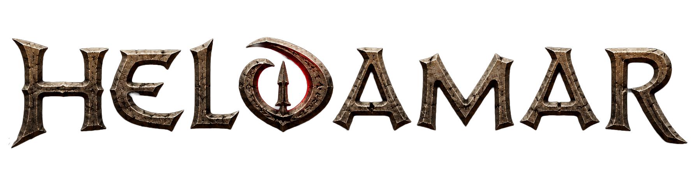

Twoje dawne życie skończyło się w chwili, gdy skazano cię na wygnanie. Wszystko, co posiadałeś, zostało ci odebrane. Majątek, pozycja, rodzina, przyjaciele i marzenia należą teraz do przeszłości. Bransoleta na nadgarstku, twój symbol wyroku jedynie przypomina o tym, że nie jesteś w stanie już opuścić tego miejsca.
Zaczynasz nowe życie na ziemiach przesiąkniętych krwią ludzi takich jak ty.
Kraina Wygnańców rozciąga się od spieczonych pustyń na południu, przez sawanny, dżungle i bagna, aż po skute lodem góry północy. Pośród starożytnych ruin dawno zapomnianych cywilizacji, świątyń pogrzebanych przez czas i niebezpiecznych ostępów, skazańcy walczą każdego dnia o przetrwanie. Nad całą krainą rozciąga się niewidzialna magiczna bariera. Każdy, kto spróbuje ją przekroczyć, zostaje zabity przez moc ukrytą w swojej bransolecie. Ucieczka nie istnieje. Jest to więzienie bez krat.
Wśród licznych grup walczących o władzę i przetrwanie znajdował się również odłam niesławnej Czarnej Ręki. Nie wszyscy byli jednak zadowoleni z życia pod rozkazami dawnych kamratów. Część piratów pragnęła czegoś więcej niż ciągłych grabieży, sporów i krótkowzrocznych decyzji. Pod wodzą zingeriańczyka Ramona, jedynego z niewielu który potrafił utrzymać tą hałastrę w kupie zebrał z sobą zaufanych ludzi i odłączył się od głównego obozu Czarnej Ręki. Towarzyszyła mu jego prawa ręka Eremon Nephru, którego wiedza na temat starożytnych tajemnic, alchemii i czarnoksięstwa była niezastąpiona w tej przeklętej krainie.
Postanowili osiedlić się w ruinach Bel'Mory, niewielkiej osady na rzece. Opuszczone mury i pozostałości dawnych budowli dawały schronienie, a okoliczne ziemie oferowały dostęp do drewna, kamienia i zwierzyny. Początkowo był to jedynie prowizoryczny obóz z czasem jednak przybywali nowi wygnańcy, szukający bezpieczniejszego miejsca do życia. Drewniane chaty ustąpiły miejsca solidnym budynkom, a niewielki obóz stopniowo rozrósł się do miana małego miasteczka.
Od pierwszych dni istnienia obozu obowiązywały jasne zasady. Ludzie, którzy podążyli za Ramonem stanowili fundament całego przedsięwzięcia. To oni przelewali krew podczas budowy pierwszych umocnień, bronili obozu przed napastnikami i ryzykowali życie podczas wypraw w nieznane. Z tego powodu najwyższe stanowiska w mieście przypadły właśnie im. Najstarsi członkowie odłamu zarządzali kopalnią, handlem, strażą oraz najważniejszymi sprawami osady. Ich słowo miało znaczenie, a ich zasługi były powszechnie szanowane.
Nie oznaczało to jednak, że nowi przybysze byli skazani na wieczne podporządkowanie.
Każdy wygnaniec, który trafiał do miasta, rozpoczynał swoją drogę od samego dołu społecznej drabiny. Bez majątku, wpływów i znajomości musiał sam udowodnić swoją wartość. Ci, którzy wykazywali się pracowitością, odwagą lub szczególnymi talentami, mogli liczyć na awans i zdobycie szacunku mieszkańców. Lojalność wobec osady oraz jego przywódców była nagradzana, podczas gdy zdrada spotykała się z surowymi konsekwencjami. W ten sposób przez lata ukształtował się porządek, który pozwolił osadzie przetrwać i rozkwitnąć pośród niebezpieczeństw Krain Wygnańców. Mieszkańcy miasta pochodzili z różnych zakątków świata i wyznawali wielu różnych bogów. Gdy ludzi było coraz więcej, a kultury się krzyżowały przyjęto zasadę wolności wyznania. Każdy mieszkaniec miał prawo oddawać cześć wybranemu przez siebie bóstwu oraz praktykować własne obrzędy i tradycje.
Wolność ta nie była jednak nieograniczona.
Żaden kult, kapłan ani wierny nie mógł narażać mieszkańców miasta na niebezpieczeństwo, zakłócać porządku publicznego ani wykorzystywać swojej wiary jako usprawiedliwienia dla przemocy wobec innych obywateli. Obrzędy wymagające ofiar z mieszkańców, niekontrolowanej magii, świadomego sprowadzania zagrożeń lub działań destabilizujących funkcjonowanie miasta były karane śmiercią.
Przełom nastąpił, gdy mieszkańcy rozpoczęli prace wydobywcze w zboczu pobliskiej góry. Początkowo celem było pozyskiwanie żelaza i innych cennych minerałów potrzebnych do rozwoju osady. Podczas drążenia kolejnych tuneli natrafiono jednak na nieznany wcześniej minerał.
Kryształ o głębokiej, hipnotyzującej barwie nazwano Setar.
Na pierwszy rzut oka wydawał się jedynie osobliwą błyskotką. Nie nadawał się do wykuwania broni czy narzędzi, a jego wartość użytkowa pozostawała zagadką. Dopiero po przebadaniu przez Eremona, dostrzeżono w nim coś niezwykłego. Podczas eksperymentów odkrył, że Setar reaguje na energię magiczną i potrafi ją magazynować oraz wzmacniać. Wkrótce okazało się, że kryształ może służyć jako wyjątkowo skuteczny katalizator rytuałów, zaklęć i alchemicznych procesów. Dzięki niemu możliwe stało się osiąganie efektów, które wcześniej wymagały ogromnych ilości rzadkich składników lub były całkowicie nieosiągalne. Przez długi czas osada pozostawała niemal niezauważona przez świat zewnętrzny. Sytuacja zmieniła się, gdy jeden z przemytników przemierzających okolice bariery dostrzegł wzmożony ruch na terenach, które wcześniej uchodziły za opuszczone. Zaintrygowany postanowił zbadać sprawę. W trakcie wizyty zaproponowano mu niewielką ilość Setaru w zamian za towary i informacje z odległych krain. Kryształ szybko wzbudził jego zainteresowanie.
Nie minęło wiele czasu, zanim powrócił.
Tym razem przywiózł ze sobą większy ładunek towarów, zapasy żywności, narzędzia oraz sakwy pełne monet. W zamian za kolejne partie Setaru, był skory do wymiany towarów spoza bariery.
Tak rozpoczął się handel, który odmienił losy osady.
Pomimo ryzyka jakie było wpłynięcie na ziemie pełne wygnańców, do miasteczka zaczęli przybywać kolejni. Najpierw z ostrożnością, z niewielkimi ładunkami i na próbę, później coraz śmielej, z większymi zapasami i towarem na wymianę. Ryzyko było wysokie, ale jeszcze wyższe były zyski. Najczęściej używaną walutą stały się turańskie monety przywożone przez handlarzy spoza Krain Wygnańców. Z czasem przyjęły się one jako podstawowy środek wymiany. Dziś osada stanowi jedno z nielicznych miejsc, gdzie wygnańcy mogą znaleźć względne bezpieczeństwo, pracę i możliwość wzbogacenia się. Jednak wraz z bogactwem pojawiają się nowe zagrożenia. Coraz więcej osób pragnie zdobyć Setar, poznać jego sekrety lub przejąć kontrolę nad kopalnią.
Po kilku latach badań Eremona wraz z grupą czarnoksiężników dzięki kryształowi z kopalni udało się obudzić uśpiony portal będący na szczycie Wieży Nietoperza. Niezrozumiały dla nikogo głos odbił się echem po całej krainie. Wraz z głosem rozbłysło jasne światło, oświetlając przebudzony portal Królów Gigantów. Przejście to otworzyło drogę na obcy, dziki ląd, Wyspę Siptaha. Wielu wyruszyło tam wierząc, że odzyskają upragnioną wolność, gdyż na wyspie bransolety stają się bezużyteczne. Szybko jednak odkryli okrutny żart bogów. Choć na Siptah nie ma magicznego muru, nikt nie potrafi z niej uciec. Otaczające wyspę morze jest szalejącym, nienaturalnym żywiołem, morderczą barierą pochłaniającą każdy statek, której żaden śmiertelnik nie jest w stanie pokonać. Nie wzbraniano nikomu przechodzić na drugą stronę, jednak ostrzegano, że to miejsce jest jeszcze bardziej niebezpieczne od ziem wygnańców.
Stoisz przed murami Bel'Mory, której nowe wcielenie istnieje dopiero od kilku lat w Krainie Wygnańców. To właśnie tutaj rozpoczyna się Twoja opowieść.
Nie jesteś bohaterem, wielkim wojownikiem ani wpływowym kupcem. Nie należysz do ludzi, którzy budowali to miasto. Nie masz ziemi, majątku ani pozycji.
Jesteś tylko kolejnym wygnańcem noszącym tą przeklętą bransoletę. Za plecami pozostawiłeś dawne życie, a przed Tobą rozciąga się świat pełen niebezpieczeństw, możliwości i tajemnic.
To, czy staniesz się szanowanym mieszkańcem, bogatym handlarzem, potężnym magiem, bezwzględnym najemnikiem czy też zginiesz zapomniany gdzieś na pustkowiach, zależy tylko i wyłącznie od Ciebie.
W Krainach Wygnańców nikt nie rodzi się legendą.
Tutaj trzeba nią zostać.
Poniżej znajdują się najczęściej spotykane bóstwa i moce czczone w Krainach Wygnańców. Lista ta nie jest zamknięta i stanowi jedynie punkt odniesienia przy tworzeniu postaci. Jeśli Twoja koncepcja zakłada kult innego bóstwa, możesz bez przeszkód wpisać je do swojej KP.
SAP (System Aktywności Postaci) to mechanika nagradzająca graczy za Roleplay. Punkty SAP nie są przyznawane za samą obecność na serwerze, to wyróżnienie od Mistrzów Gry za Twój wkład w tworzenie immersyjnego świata.
Mistrzowie Gry oceniają aktywność graczy oraz przyznają punkty na podstawie następujących aspektów:
Postać automatycznie otrzymuje punkty doświadczenia w cyklach co 10 minut. Wartość ta jest bezpośrednio powiązana z liczbą posiadanych punktów SAP:
Przykład: Przy posiadaniu 5 punktów SAP, postać otrzyma 1000 EXP co 10 minut (500 EXP bazy + 500 EXP z tytułu SAP).
Efektywność systemu AutoEXP zmienia się wraz z czasem trwania sesji:
Przykład: Postać posiadająca 10 SAP standardowo generuje 1500 EXP co 10 minut. Po przekroczeniu 2 godzin ciągłej rozgrywki, zysk spada do 300 EXP na każdy kolejny 10-minutowy cykl.
Punkty SAP zwiększają dzienny limit punktów doświadczenia, jakie postać może zdobyć poprzez walkę z potworami:
Przykład: Dla postaci z 4 punktami SAP dzienny limit doświadczenia z walki wynosi 10 000 EXP (6000 EXP bazy + 4000 EXP z tytułu SAP).
Ważne: Doświadczenie generowane przez system AutoEXP jest całkowicie niezależne od limitu farmienia i nie uszczupla dziennej puli EXP możliwej do zdobycia na potworach.
Aktywność na postaci głównej przekłada się na łatwiejszy start dla kolejnych postaci. Nowo utworzony alt otrzymuje na start 50% wartości punktów SAP postaci głównej, pod warunkiem, że postać główna posiada łącznie więcej niż 20 punktów SAP.
Przykład: Jeśli główna postać posiada 30 SAP, nowo utworzony alt rozpocznie rozgrywkę z pulą 15 SAP.
Nie są typowymi magami gier RPG. Nie strzelają na życzenie błyskawicami i ognistymi pociskami z opuszków palców. Ich moc nie jest natychmiastowa, lecz cierpliwa, subtelna i przerażająca. Czarodziej nagina świat nie polotem, lecz rytuałem, wolą i szeptanymi układami z istotami Zewnętrznego Mroku, których imion lepiej nie wypowiadać pochopnie. Każde zaklęcie jest rytuałem, dziełem siły woli, poświęcenia i czasu. Wymaga rzadkich składników, niebiańskich układów i inwokacji mocy, których lepiej nie nazywać.
Wielkie dzieła wymagają czasu. W ogniu walki nie ma „szybkich zaklęć” (prócz podstawowego ataku magicznego systemu EasyD6). Czarownik musi działać z pozycji bezpieczeństwa i tajemnicy, strzeżony przez akolitów lub strażników, często ukryty za iluzjami.
Magia jest niebezpieczna i deprawująca: branie w niej udziału to ryzykowanie zdrowia psychicznego, duszy lub ciała. Długotrwałe jej używanie często prowadzi do szaleństwa, zmian moralnych, potwornych transformacji, a nawet czegoś gorszego.
Każda moc ma swoją cenę. Najpotężniejsze rytuały czerpią z zakazanej wiedzy, krwawych ofiar, komunii z obcymi istotami i często wiążą się z największym ryzykiem dla samego czarownika.
Czarodzieje kształtują imperia i zmieniają bieg losu nie za pomocą armii, ale za pomocą wizji, klątw, plag i uwodzenia potężnych.
Są marionetkarzami, a nie wojownikami. Kiedy armie się ścierają, czarownik najprawdopodobniej znajduje się wiele kilometrów od pola bitwy, manipulując biegiem wydarzeń za pomocą zaklęcia rzuconego wiele dni temu. Zatruty sen, subtelna klątwa lub przywołany horror uwolniony pod osłoną nocy.
Większość praktykuje mroczną sztukę za pośrednictwem kapłaństwa, ukrytych kultów lub mrocznych intryg. Zawsze z cienia lub pod ochroną królów. Otwarte używanie magii budzi strach i nienawiść. W wielu krajach tytułowanie się czarownikiem oznacza szybką zemstę przesądnych mas.
Na Ziemiach Wygnańców nie brak ludzi parających się czarną magią, a więc i temat ten nie stanowi podstaw do krytyki w codziennych rozmowach. Jednakże należy pamiętać, że czarnoksiężnicy niechętnie dzielą się swoimi tajemnicami, a niepisane prawa Bel'Mory powstrzymują ich przed składaniem ofiar z mieszkańców i trenowaniem swojej sztuki na ich duszach.
Przykładowe domeny sztuki tajemnej:
Wielkie tradycje magiczne wywodzą się ze starożytnych imperiów, takich jak Acheron, czy Stygia, z których każde ma swoje własne bluźniercze tomy, takie jak Księga Skelosa. Najczęściej jednak, im głębiej zanurza się w Zewnętrzny Mrok, tym bardziej magia mutuje i rozszerza się, co skutkuje rytuałami i metodami unikalnymi dla każdego praktykującego. Nie mniej jednak należy pamiętać, że sztuki czarnoksięskie z uniwersum Conana bardzo różnią się od tych, z tradycyjnych gier DnD. Będzie to wielokrotnie podkreślane podczas gry - każde zaklęcie ma swoją cenę. Jako czarnoksiężnik (również i szaman bądź kapłan) masz wybór by zasięgnąć mocy Zewnętrznego Mroku. Jeśli podczas walki kostkowej, zrezygnujesz ze swojego podstawowego ataku na rzecz zaklęcia, musisz opisać jak negatywnie wpłynęło to na twoją postać.
Czarnoksiężnik nie zrobi niczego bez oddania czegoś od siebie. Może być to natychmiast, albo może zapłacić później, jednak zapłacić musi. Magia wysysa siłę życiową, deprawuje, a jeśli zawiedzie, może łatwo obrócić się przeciwko niemu. Obcowanie z Zewnętrznym Mrokiem zawsze kończy się otwieraniem swojej podświadomości na jej wpływ.
Nie ma listy składników potrzebnych do tego, by rzucić zaklęcie. Zamiast tego wymagane są ofiary. Każde zaklęcie jest naruszeniem naturalnego porządku, a rzucający je zawiera pakt z nieczystymi siłami. Wymaga to pewnego rodzaju ofiary. Mogą one przyjmować formę od prostych drobnych gestów po masowe rytualne składanie ofiar.
Praktycznym powodem istnienia ofiar jest zjednywanie sobie przychylności mrocznych istot. Samo złożenie ofiary nie gwarantuje niczego czarującemu. Próbuje się w ten sposób przekupić moce ciemności, które same w sobie są zepsute. Te moce mogą jednak równie dobrze odrzucić taką prośbę. Dopiero po złożeniu ofiary okazuje się, czy zaklęcie zakończyło się sukcesem, czy porażką.
Ponieważ natura czarów skłania się ku złu, również natura ofiar ma co najmniej nieczysty, a często wręcz niegodziwy charakter.
Istnieją tylko dwa powody, by zgłębiać sztuki magiczne w Epoce Hyboryjskiej - wiedza i potęga. Z tych dwóch to właśnie potęga jest zdecydowanie najczęstszą motywacją. Prawdziwi poszukiwacze wiedzy należą do rzadkości, choć wielu przekonuje samych siebie, że pragną wiedzy, a nie władzy. Może to być nawet prawdą - dopóki nie padną ofiarą straszliwych, deprawujących wpływów mrocznych sił, z którymi nawiązują kontakt, a ich umysł zostaje nieodwracalnie spaczony.
To, co można nazwać „prawdziwą” magią, można zdobyć na jeden lub kilka z następujących sposobów: studiując na wpół zapomniane grimuary minionych epok, nawiązując kontakt z bogami, demonami lub innymi duchami albo ucząc się bezpośrednio od innego czarownika. Wszystkie trzy metody są niebezpieczne. Pierwsza często naraża ciało na bezpośrednie niebezpieczeństwo, ponieważ grimuary, które nie znajdują się już w posiadaniu jakiegoś adepta, zazwyczaj ukryte są w nawiedzonych przez duchy grobowcach lub dżunglach przesyconych trującym lotosem. Dwie pozostałe niemal zawsze wymagają, aby czarownik podporządkował swój umysł, ciało i duszę potężniejszej istocie, od której pobiera nauki. Jednak prawdziwa wiedza daje tak wielką moc, że niemal zawsze jest warta zapłaconej ceny.
Zewnętrzny Mrok można rozumieć jako źródło wszystkiego, co w Conanie uznaje się za nadnaturalne: demonów, tak zwanych bogów, zakazanej wiedzy i samej magii. Kiedy czarnoksiężnik przyzywa siły, nie tyle „ściąga istotę z innego miejsca”, co raczej zmusza rzeczywistość do kontaktu z czymś, co normalnie nie powinno mieć z nią styczności. Dlatego każdy taki kontakt jest niebezpieczny nie tylko dlatego, że przywołana siła może być wroga, ale też dlatego, że sam świat i umysł człowieka nie są przystosowane do czegoś tak obcego. Świat Hyborii jest jak cienka warstwa stabilnego porządku, a Zewnętrzny Mrok to coś, co ten porządek otacza i nieustannie na niego naciska.
Zewnętrzny Mrok to bezkresna otchłań istniejąca poza granicami świata. Nie jest krainą, do której można dotrzeć, ani miejscem zaznaczonym na jakiejkolwiek mapie. To przestrzeń znajdująca się poza znaną rzeczywistością, zamieszkana przez istoty starsze od ludzkiej pamięci i całkowicie obce wszelkim prawom natury. Świat oddziela od tej otchłani tajemniczy pas światła, który stanowi barierę dla niezliczonych bytów czających się w ciemności. Większość z nich nigdy nie przekracza tej granicy, lecz zdarzają się wyjątki. Potężne rytuały lub wykorzystanie starożytnych artefaktów mogą osłabić tę barierę i umożliwić istotom z Zewnętrznego Mroku wkroczenie do świata śmiertelników.
Byty zamieszkujące Zewnętrzny Mrok nie są demonami ani bogami w ludzkim rozumieniu tych pojęć. Są istotami znacznie starszymi od znanych cywilizacji, a ich natura pozostaje całkowicie obca i niezrozumiała. Kiedy przedostaną się do świata materialnego, muszą przybrać cielesną postać. Wówczas można je zranić, a nawet zniszczyć, choć ich prawdziwa istota pozostaje ukryta w głębinach otchłani. To właśnie z Zewnętrznego Mroku czarnoksiężnicy czerpią swoją największą moc. Najpotężniejsze zaklęcia, rytuały i tajemnice nie pochodzą od bogów ani duchów, lecz są wykradane lub otrzymywane od bytów zamieszkujących tę kosmiczną ciemność. Każde takie wezwanie wiąże się jednak z ogromnym ryzykiem. Im większej mocy pragnie czarnoksiężnik, tym większą uwagę zwracają na niego istoty z otchłani, a cena za ich dary bywa znacznie wyższa, niż początkowo się wydaje. Dla większości mieszkańców świata Zewnętrzny Mrok pozostaje jedynie legendą lub tematem zakazanych ksiąg. Nieliczni wierzą, że naprawdę istnieje, a jeszcze mniej zdaje sobie sprawę, że najwięksi czarnoksiężnicy od wieków zwracają ku niemu swoje rytuały w poszukiwaniu wiedzy i potęgi. Zewnętrzny Mrok nie jest miejscem przeznaczonym do odkrycia ani zbadania. Stanowi źródło niewyobrażalnej mocy oraz kosmicznej grozy, przypominając, że poza granicami świata istnieją siły starsze od bogów czczonych przez ludzi i całkowicie obojętne wobec losu śmiertelników.
Najłatwiej porównać Zewnętrzny Mrok do mitologii Lovecrafta, bo w obu przypadkach chodzi o nieskończoną, obcą przestrzeń poza znanym światem, zamieszkaną przez byty starsze od ludzkości, które nie podlegają ludzkiej logice ani naturze. Kontakt z nimi wiąże się z ryzykiem obłędu, skażenia lub katastrofy, a sama rzeczywistość jest jedynie cienką warstwą oddzielającą ludzi od tej kosmicznej otchłani.
Na tej edycji nie mieszamy D&D czy innych styli z światem conana. Gramy go czystego, więc teraz odgrywanie postaci magicznej wygląda inaczej. Jeśli ktoś chciał strzelać kulami ognia, przywoływać deszcze meteorytów czy zapalać ognisko pstryknięciem palców to się rozczaruje. Postacie czarujące będą najbardziej nadzorowane, a przesadzanie z tym co postać może zrobić będzie się odbijało na niej. Jeśli ktoś ma jakieś wątpliwości co do możliwości postaci zapraszamy na ticket po odpowiedzi.
System Zguby to mechanika mrocznej korupcji, skazy lub klątwy, która bezpośrednio wpływa na postać gracza, odzwierciedlając jej kontakt z zakazaną magią, demonicznymi istotami lub przeklętymi miejscami. Punkty te są widoczne w Karcie Postaci.
Zguba to nienaturalne piętno, które osadza się na ciele i umyśle. Postać otrzymuje je poprzez:
Efekt: Całkowity brak kar mechanicznych.
RP: Gracz może bezpiecznie wejść w kontakt z mrokiem czy rytuałem, nie ryzykując natychmiastowego osłabienia postaci.
RP: Twoje ciało reaguje chorobliwą, zimną gorączką na narastającą obecność Zewnętrznego Mroku. Jesteś już w 25% trwale skażony, a tego piętna nie da się usunąć zwykłymi sposobami. Krew pulsuje wolniej, a wyraźny spadek witalności i zadyszka wymuszają na tobie znacznie większą ostrożność w walce i podczas wędrówki.
RP: Zewnętrzny Mrok pochłonął cię w 50%, a skaza stała się wyniszczającą chorobą duszy i ciała. Zguba to teraz przytłaczający ciężar, którego wielu nie jest w stanie unieść. Twoja skóra staje się niezdrowo wrażliwa na uderzenia, witalność drastycznie spada, a mięśnie odmawiają posłuszeństwa, przez co każdy nagły ruch przypomina brodzenie w smole.
RP: Przekroczyłeś granicę, zza której nie ma łatwego powrotu. Kiedy Zguba osiąga apogeum, twój umysł i ciało doznają potężnego wstrząsu. Pozornie odzyskujesz siły, a uciążliwe objawy gorączki i skazy nagle ustępują, licznik punktów Zguby resetuje się do zera, rozpoczynając cały cykl od nowa. Cena tego fałszywego „oczyszczenia” jest jednak potworna.
W zamian postać otrzymuje 1 punkt Zatracenia, głęboką, niemal nieuleczalną ranę na duszy. Kiedy postać zbierze łącznie 3 punkty Zatracenia, jej umysł ostatecznie pęka i umiera ona bezpowrotnie, pogrążona w całkowitym szaleństwie Zewnętrznego Mroku (CK).
Aby zmyć z siebie to powierzchowne skażenie, musisz odszukać kapłana w Bel'Morze. Posiada on w swoich zapasach Liście Białego Lotosu, jednak samo ich żucie to zaledwie połowa rytuału oczyszczenia. Po ich zażyciu musisz udać się do specjalnej kadzielnicy w Bel'Morze - dopiero jej dym i płomienie bezpowrotnie pochłoną ulatujące z ciebie skażenie Zguby. Sama roślina jest niezwykle rzadka, choć wędrowcy szepczą, że przy odrobinie szczęścia można na nią natrafić dziko rosnącą wysoko, na niedostępnych, ośnieżonych szczytach gór.
Gdy umysł zaczyna pochłaniać pustka, zwykłe zioła nie wystarczą. Wspomniany kapłan w Bel'Morze może zaoferować zdesperowanym Fiolkę ekstraktu z Białego Lotosu. Samo jej wypicie to za mało. Po zażyciu tej potężnej i brutalnej mikstury organizm zacznie odrzucać mrok, a ty musisz natychmiast stanąć przed świętą kadzielnicą w Bel'Morze. To ona ostatecznie pochłonie uwolnione z ciebie zepsucie, wyrywając duszę ze szponów głębokiego Zatracenia i na nowo kotwicząc ją w materialnym świecie. Ekstrakt ten jest niezwykle cenny, dlatego przy odrobinie szczęścia wędrowcy mogą odnaleźć zapieczętowane fiolki również w ukrytych Skrzyniach Skarbów.
Mimo że efekt wizualnie wykorzystuje mechanikę Spaczenia (Corruption) z Conan Exiles, nie jest to zwykłe spaczenie i stanowi element autorskiego systemu Zguby. Wszelkie standardowe metody usuwania spaczenia, takie jak tancerki, mikstury czy inne mechaniki gry, nie mają zastosowania, nawet jeśli gra technicznie pozwala na jego zredukowanie.
Stopień Zguby jest rozliczany wyłącznie według zasad systemu serwera i może zostać zmniejszony jedynie w sposób przewidziany przez administrację oraz mechaniki fabularne.
Przykładowy tekst profesji.
